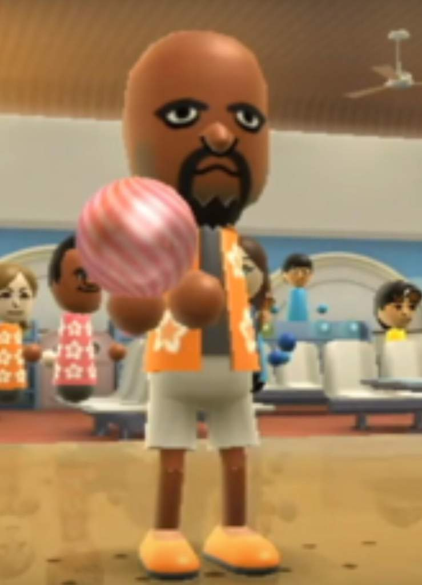

Soup Realty, LLC
Matt's Story

MATT AT THE 2006 PBA BOWLING WORLD CHAMPIONSHIP
Matt double majored in Studio Art and Classical Studies from SOUP University, graduating in 2003 and soon thereafter rising to celebrity in the world of professional bowling. After shocking both the bowling world and the public alike by bowling a perfect 300 game in his rookie entry into the PBA, Matt became a household name. As Matt continued to win tournaments, he amassed huge sponsorships from dozens of companies.
Matt went on to win 12 PBA tournaments, securing himself as the greatest bowler of all time. However, the sport of Bowling which had enjoyed a significant following during his rise to greatness, declined greatly in viewership due to changing public interests, and the rise of alternatives such as reality TV and commercial teleportation, space travel, and astral projection contributed to the slow but sure demise of competitive bowling as entertainment.
During the height of his career, Matt married Michelle Obama, after she split with her celebrity political figure husband Barack due to his secret relationship with Texas Senator Ted Cruz being made public (im not sure about this part idk i want to make it tie into some conspiracy theory at some point or something that would be funny.) Matt and Michelle were the IT couple with all eyes on them, attracting constant media attention due to their sustained involvement in public life. Dubbed “M&M” by The National Enquirer, the impact of this celebrity couple on popular culture can be felt to this day with the etymology of the Detroit based rapper Barshell Bathers’ rap alias ‘Eminem’ tracing its roots back to the days of Matt and Michelle. Day which inspired many more than just Bathers.
Matt seemingly had it all – the gold, the glory. He was an American treasure and a household name nonetheless. But on the 22nd of February 2011, TMZ ran a cover story revealing the shocking news that Matt had been secretly romantically involved with Svetlana Stevka. The supermodel bowling ball had at the time been married to Bowling commissioner Phil Goodman, a marriage which quickly dissolved, along with Matt and Michelles, amids the scandal. America was left heartbroken as their seemingly untouchable, pure, beloved M&M melted away before their eyes just like a real M&M might melt under the sun or in a hot car. Matt was faced with shame from America’s tabloid readers, but equally if not more he was shunned from the bowling community he was once the figurehead of in a public feud that lasted weeks.
After his fall from bowling’s grace and public life, Matt decided to return to his Liberal Arts roots, and moved to San Francisco to pursue a career as a contemporary painter. His new works received a mild reception, and most gallery-goers saw his work merely as a novelty of the bowling world, rather than as a separate endeavor. He worked hard to cloak his identity for a chance to be noticed by the art world for his concepts and skill, rather than his past as a glitzy star of a popular sport. Eventually even this wore off. Little is known about Matt during this period, though it is suspected that he, like many Americans subject to a flawed health care system and inadequate mental health care, fell victim to the opioid crisis as the juxtaposition between the glamorous successes of his bowling career and the mediocrity of his art career spiraled him into a deep depression. Matt moved to Sacramento to escape from the rising rent of his gallery-space, as his neighborhood was actively gentrified by an influx of the neo-bourgeois of Amazon.
In Sacramento, he joined an experimental industrial hip-hop trio, noted for their abrasive sound and vulgar, nihilistic lyrics. His past life was unknown to his bandmates, as his physical appearance had greatly changed since his days in stardom. With a new girlfriend, his music project on an upward trajectory, and beginning his path towards getting sober, things seemed to be improving for Matt. Until one rainy night making his way back to his apartment, Matt slipped on a magazine and landed horribly completely tearing his ACL. After intense medical care, Matt was bed ridden with a recovery time of 9 months and thousands in medical bills. With no way to continue performing Matt had to leave the trio and with the spark gone, the band subsequently broke up. Leading a highly dependent new lifestyle requiring intense committed care, Matt’s girlfriend left him amidst a new pressure and responsibility she was not prepared for. Left on his own, out of job, and unavoidably back on heavy and frequent painkiller use Matt fell into a new low.
After an overdose left him nearly dead on the streets of Sacramento, Matt was awoken when a flier for a religious organization by the name of CRAIG blew onto his face, making him sneeze, which restarted his heart. Determined to pursue whatever higher power he believed saved his life that day, Matt moved to Cromwell, Connecticut (the spiritual heartland of CRAIG), and started to pursue a career as a real-estate agent. Matt has been selling beautiful properties across the universe ever since.